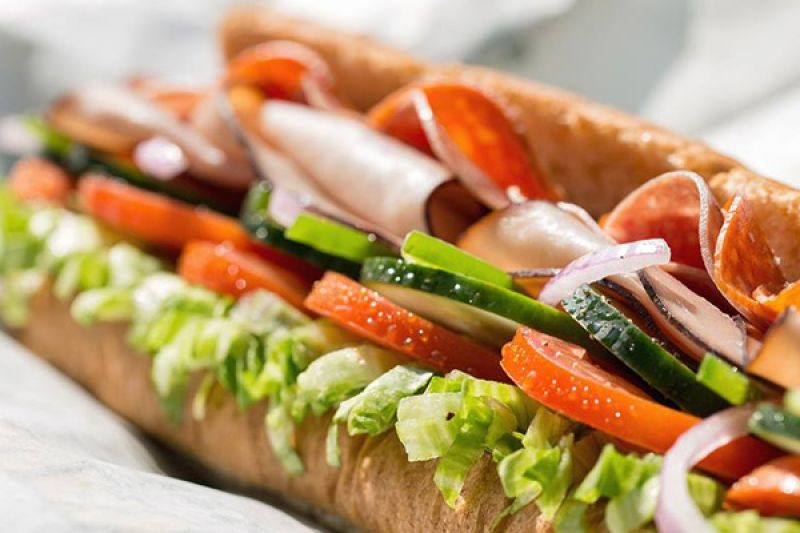
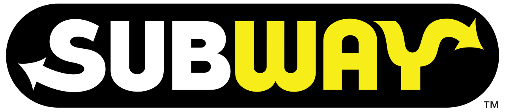

홈 > 브랜드 매거진 > 써브웨이
써브웨이
써브웨이(Subway)는 1965년 미국에서 시작된 서브마린 샌드위치 프랜차이즈이다.
산업 분야 식음료 · 공개 등급 자료 기반 · 브랜드 평가 4.3 ★


한눈에 보는 브랜드
써브웨이는 1965년 코네티컷주 브리지포트에서 당시 17세였던 프레드 데루카가 가족의 지인이자 핵물리학자였던 피터 벅 박사의 권유와 자금으로 시작한 미국식 서브머린 샌드위치 프랜차이즈다. 작은 동네 샌드위치 가게로 출발해 가맹 모델을 채택하면서 매장 수 기준 전 세계 최대 외식 체인 가운데 하나로 성장했고, 현재 100여 개국에 약 3만 7천 개 매장을 운영한다.
2024년 4월 사모펀드 운용사 로크캐피털이 약 96억 달러 규모로 인수를 마무리하며 60년 가까이 이어진 창업 가문 중심 체제에서 사모펀드 소유 구조로 전환했다.
브랜드 관점
써브웨이의 핵심 차별점은 즉석에서 빵·채소·소스·단백질을 손님이 직접 고르는 커스터마이즈 방식과 '신선한 패스트푸드'라는 포지셔닝이다. 패티를 미리 조리해 규격대로 내놓는 맥도날드 등 햄버거 중심 경쟁자와 달리, 채소를 눈앞에서 얹어 만드는 조립형 경험으로 건강 지향 수요를 흡수했다.
그러나 과도한 가맹 확장이 부메랑이 됐다. 미국 매장은 2015년 2만 7천여 개로 정점을 찍은 뒤 10년 연속 순감소했고, 2024년 631개·2025년 729개가 추가로 문을 닫아 국내 매장은 약 1만 9천여 개로 20년 만의 최저 수준이다.
2023~2024년 로크캐피털 인수는 적정 입지로의 '라이트사이징'과 수익성 재편을 의미하며, 실제 본사 영업이익은 식자재·장비 공급 수익 확대로 개선됐다. 한국에서는 1991년 63빌딩 1호점 이후 매장이 늘었으나, 원부자재·인건비 부담으로 잦은 가격 인상과 매장·배달 가격을 달리하는 이중가격제 도입이 소비자 불만 요인으로 부각됐다.
시작과 성장
출발점은 1965년 여름이다. 대학 등록금을 걱정하던 17세 프레드 데루카가 가족의 지인인 피터 벅 박사에게 조언을 구하자, 벅 박사는 서브머린 샌드위치 가게를 열어 보라며 1천 달러를 건넸다.
두 사람은 코네티컷주 브리지포트에 '피츠 슈퍼 서브머린'을 열었고 첫날 312개를 팔았다. 라디오 광고에서 '피츠 서브머린'이 다른 단어처럼 들린다는 지적이 나오자 '피츠 서브웨이'를 거쳐 1968년 지금의 '써브웨이'로 이름을 줄였다.
직영 확장이 한계에 부딪히자 두 사람은 가맹 모델로 방향을 틀었고, 인근 월링퍼드에 첫 가맹점을 연 뒤 성장이 폭발적으로 빨라졌다. 창업자 데루카가 2015년 세상을 떠나고 공동 창업자 벅 박사도 2021년 별세하면서 가문 중심 경영의 한 시대가 저물었다.
이후 2023년 매각 합의가 이뤄졌고, 2024년 4월 로크캐피털이 인수를 최종 완료하며 약 60년 만에 소유 구조가 사모펀드로 넘어갔다.
브랜드 아이덴티티
써브웨이가 내세우는 가치는 신선함과 손님 주도의 선택권이다. 이를 압축한 것이 2016년 '프레시 포워드' 개편 때 다듬어진 워드마크로, 첫 글자 S와 끝 글자 Y에 화살표를 넣어 각각 매장에 들어서는 진입과 만족스럽게 나서는 퇴장을 상징하며 빠른 속도와 전진을 표현한다.
색은 채소와 신선함을 연상시키는 초록과, 따뜻함·활기·시인성을 더하는 노랑을 묶어 붉은색 위주의 경쟁 브랜드와 의도적으로 거리를 뒀다. 타깃은 빠르고 건강한 한 끼를 원하는 활동적인 도시 직장인과 운동 인구이며, 브랜드 보이스는 '신선하게, 당신 방식대로'라는 약속처럼 친근하면서 부담을 주지 않는 어조를 유지한다.
제품과 서비스
대표 상품은 30센티미터 풋롱과 15센티미터 샌드위치로, 빵·채소·소스·치즈·단백질을 손님이 직접 골라 조립하는 방식이 핵심이다. 여기에 랩, 샐러드, 단백질 볼 등으로 메뉴를 넓혔다.
미국 기준 15센티미터는 대략 6달러대 후반에서 9달러대, 풋롱은 9달러대에서 15달러대에 형성되며 추가 토핑은 별도다. 2026년에는 5달러 미만 가성비 라인을 처음 선보였다.
채널은 매장 방문과 드라이브스루, 자체 앱·배달앱을 함께 운영한다.
사람들
창업자: 프레드 델루카와 피터 벅(Fred DeLuca & Peter Buck)이 1965년 시작했다. 소유: 로크 캐피털(Roark Capital, 2024년 4월 인수 완료).
현재 상태
현재 소유주는 2024년 4월 인수를 완료한 미국 사모펀드 로크캐피털이며, 본사는 플로리다주 마이애미에 있다. 매장은 100여 개국에 약 3만 7천 개 규모이나, 미국 내 매장은 10년 연속 순감소해 약 1만 9천여 개 수준으로 줄었다.
사모펀드 인수 이후의 구체적 재무 수치와 향후 매각·상장 계획 등 세부 사항은 비상장 비공개로 공식 발표되지 않았다.
타임라인
BI/CI 변천사
함께 읽을 브랜드
맥도날드는 가장 평범한 소비재를 세계 어디서나 읽히는 대중문화의 기호로 바꾼 브랜드다. 햄버거와 감자튀김은 단순한 메뉴지만, 맥도날드는 속도, 표준화, 접근성, 익숙...
버거킹는 미국의 식음료 브랜드로, 맛, 메뉴 구성, 패키지, 매장 또는 유통 채널이 함께 브랜드 경험을 만드는 영역입니다.
 식음료 · 자료 기반메가MGC커피
식음료 · 자료 기반메가MGC커피메가MGC커피(Mega MGC Coffee)는 2015년 시작된 한국의 저가 대용량 커피 프랜차이즈다.
ST
신전떡볶이
식음료 · 자료 기반신전떡볶이신전떡볶이는 매운 떡볶이를 앞세운 한국의 분식 프랜차이즈다. 1999년 대구에서 작은 떡볶이 가게로 출발해 강한 매운맛을 정체성으로 삼으며 빠르게 이름을 알렸다. 떡...
CD
청년다방
식음료 · 자료 기반청년다방청년다방은 떡볶이를 중심으로 커피와 음료를 함께 파는 다방 콘셉트의 분식 프랜차이즈다. 운영사는 외식 브랜딩 기업 한경기획으로, 즉석떡볶이에 다양한 토핑을 얹는 방식...
Ma
Matheson Food Company
식음료 · 편집 검수Matheson Food Company매티 매시슨 푸드 컴퍼니는 캐나다 셰프이자 더 베어 총괄 프로듀서인 매티 매시슨이 2024년 정식 선보인 식품 라인으로, 2023년 말 조용히 데뷔했다. 바비큐 소스...
TK
더본코리아
식음료 · 자료 기반더본코리아더본코리아는 백종원이 이끄는 한국의 외식 프랜차이즈 기업으로, 빽다방·홍콩반점·새마을식당·한신포차 등 다수의 외식 브랜드를 한 회사 안에서 운영한다. 가맹사업을 중심...
MM
메가엠지씨커피
식음료 · 자료 기반메가엠지씨커피메가엠지씨커피는 합리적 가격과 대용량을 앞세운 한국의 저가 커피 프랜차이즈다. 2015년 첫 매장을 연 뒤 빠른 가맹 확장으로 국내 최대급 매장 수를 갖춘 브랜드로...